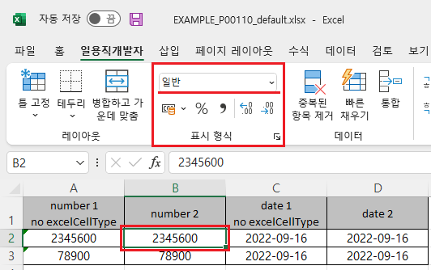
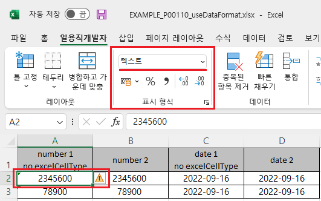
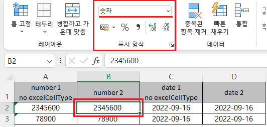
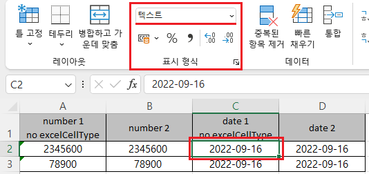
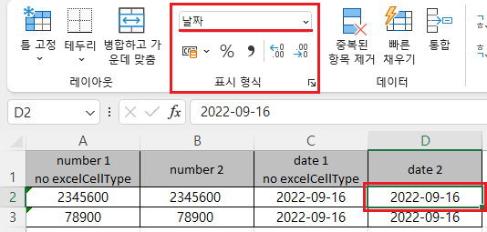
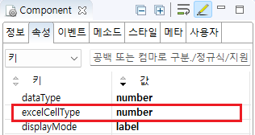

GridView의 'advancedExcelDownload' 메소드의 첫 번째 인자인 JSON 객체의 'useDataFormat'을 사용하여, 엑셀 다운로드 시 데이터의 타입을 설정한 예제입니다. 'useDataFormat'을 'true'로 설정하면, GridView의 바디 컬럼의 'excelCellType' 속성에 설정된 값으로 엑셀에 데이터 타입이 설정됩니다. 'excelCellType' 속성에 설정할 수 있는 값은 'number', 'bigDecimal', 'text', 'date'가 있습니다.
엑셀 다운로드 - 기본 동작
엑셀 다운로드 - useDataFormat 사용
GridView에는 숫자(number)형과 날짜(date)형 데이터가 각 컬럼에 할당되었습니다. GridView의 헤더에 "no excelCellType" 문자열이 포함된 경우는 excelCellType 속성이 지정되지 않았습니다. 다운로드된 엑셀의 셀의 "표현 형식"에 설정된 값을 비교합니다.
1
STEP 1: 버튼 '엑셀 다운로드 - 기본 동작'을 클릭합니다.
엑셀 파일 "EXAMPLE_P00110_default.xlsx"이 다운로드 됩니다.
2
STEP 2: 실행된 결과를 확인합니다.
다운로드 된 엑셀 파일 "EXAMPLE_P00110_default.xlsx"을 실행합니다.
각 셀의 데이터의 유형이 "일반"으로 지정된 것을 확인합니다.
Image 1.다운로드된 엑셀(2021) 파일 예시

GridView에는 숫자(number)형과 날짜(date)형 데이터가 각 컬럼에 할당되었습니다. GridView의 헤더에 "no excelCellType" 문자열이 포함된 경우는 excelCellType 속성이 지정되지 않았습니다. 다운로드된 엑셀의 셀의 "표현 형식"에 설정된 값을 비교합니다.
1
STEP 1: 버튼 '엑셀 다운로드 - useDataFormat 사용'을 클릭합니다.
엑셀 파일 "EXAMPLE_P00110_useDataFormat.xlsx"이 다운로드 됩니다.
2
STEP 2: 실행된 결과를 확인합니다.
다운로드 된 엑셀 파일을 실행하여 각 셀의 데이터 타입을 확인합니다. 다음은 엑셀에 지정된 컬럼별 데이터 타입입니다. - number 1 no excelCellType : 텍스트 - number 2 : 숫자 - date 1 no excelCellType : 텍스트 - date 2 : 날짜
Image 2.다운로드된 엑셀(2021) 파일 예시

Image 3.다운로드된 엑셀(2021) 파일 예시

Image 4.다운로드된 엑셀(2021) 파일 예시

Image 5.다운로드된 엑셀(2021) 파일 예시

1
STEP 1: GridView 바디 컬럼의 속성을 설정합니다.
아래는 "숫자"형 지정의 예시입니다.
[필수] excelCellType="number"
엑셀에 지정할 데이터 타입.
"number" : "숫자" 지정, "bigDecimal" : "숫자" 지정, "text" : "텍스트" 지정, "date" : "날짜" 지정
[선택] dataType="number"
Image 6.웹스퀘어 스튜디오의 Component View - 속성 설정 예시

Example 1.Source
<!-- gridView 의 소스 본문 예시 --> <w2:gridView dataList="data:dlt_excel"> <!-- 중략 --> <w2:gBody id="gBody1"> <w2:row id="row2"> <!-- 중략 --> <!-- 숫자형 --> <w2:column excelCellType="number" dataType="number" id="number_2"> </w2:column> <!-- 날짜형 --> <w2:column excelCellType="date" dataType="date" id="date_2"> </w2:column> </w2:row> </w2:gBody> </w2:gridView>
2
STEP 2: 'advancedExcelDownload' 메소드를 사용하여 스크립트를 작성합니다.
Example 2.Script
//예제 파일의 스크립트 "scwin.btn_ex2_onclick"를 참고하세요. var jsnOptions = { fileName : "EXAMPLE_P00110_useDataFormat.xlsx", useDataFormat : true //[default: 없음] "true"인 경우 dataType에 따라 Excel 파일에 표시 형식을 출력. dataType="text"인 셀은 Excel의 표시형식에 '텍스트' 출력, dataType="number" 혹은 "bigDecimal" 셀은 "숫자" 출력. }; //GridView의 엑셀다운로드 API를 호출합니다. grd_exam1.advancedExcelDownload(jsnOptions);
advancedExcelDownload( options , infoArr )
options.useDataFormat
[column] excelCellType